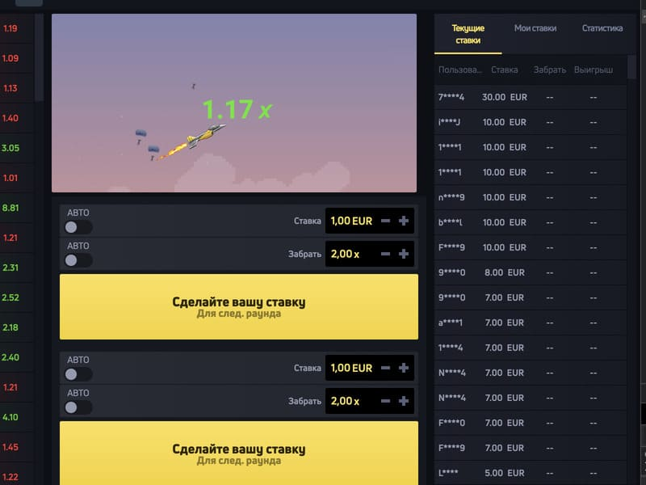
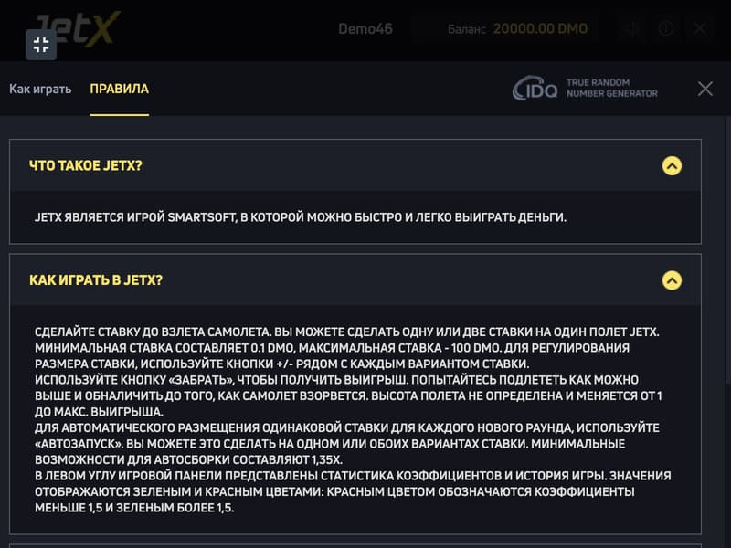
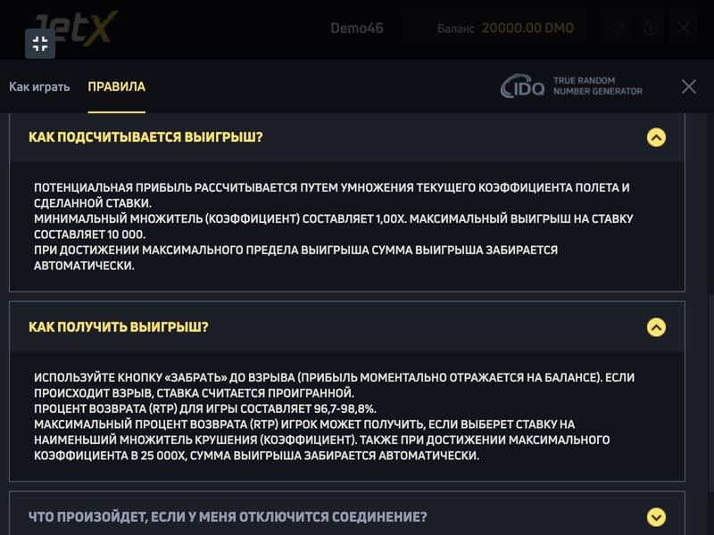

Play Jet X at an online casino

Crash games are rapidly gaining popularity in online casinos. In 2019, the Smartsoft Gaming provider released Jet X, which immediately became a hit on many popular gambling sites. The game refers to the development of a new game format, which offers a completely new principle of entertainment based on the human factor. The main feature is that players are constantly in the dark, expecting big wins. There is always a choice: settle for small wins or try to reach the highest odds. The last word, as in most games on the Internet, remains with Fortune.
Reasons for the popularity of Jet X

This type of crash game is an innovative feature of developers for online casino sites, which occupies a leading position among gaming content. Such popularity of crash games is quite understandable, given the multiple advantages.
Benefits of Crash Game JetX
The game is similar to other crash games such as Aviator. Fans of hit slot machines can change the picture, plot, and features, and apply different strategies that bring the path to victory in Jet X closer.
As an another benefit, the perfect balance of adrenaline and excitement should be highlighted. Players can vary their pastime, trying to be content with minimal income or taking risks to become the owner of a progressive Jackpot.
How to play and win at JetX
The game Jet X touches on the subject of aviation. Players enter the airport runway with the opportunity to witness the victorious takeoff of aircraft. To play and win at Jet X, you must, first of all, know the basic rules. Also, victories bring the application of strategies and tactics much closer.
Rules of the game in Jet X

The game is multiplayer, so the rounds start automatically. Before the start, bets are accepted, which players can set in the range from 0.1 to 600. The task is to follow the aircraft gaining altitude and at a certain moment have time to withdraw the coefficient. The higher the takeoff point, the greater the gain. But if the plane flies away, the player loses all winnings. Jet X contains a Jackpot bonus feature. Anyone who plays at bets from 1 credit and displays odds with an indicator of 1.5+ can become its owner.
Strategies and tactics in Jet X
Thematic sites offer many winning strategies in Jet X, among which the most popular are:
After the coefficient indicator reaches more than 1.1, you can make a cashout. Luck more than 4 times in a row makes it possible to gradually increase the waiting time until an unsuccessful round. In this case, frequent rewards are guaranteed.
The player makes auto-cashouts with a multiplier in the x2-x3 range, which increases the prize potential. The percentage of winning rounds averages up to 40%, which is quite enough to recoup in case of failure.
It is used if you want to hit a big jackpot in the amount of x100+. To do this, you should study the statistics of high odds in more detail, while simultaneously analyzing the results of the gameplay. A winning round will give a real jackpot, multiplying the bet by 100, 200 or more times
Players can change winning tactics, depending on the goals and mood. At the same time, it is always necessary to remember the measure, not to exceed the limit if Fortune turns away. Rounds can be slow or dynamic, so you need to learn how to adapt to them, depending on the situation. The payout percentage of the game is 97%, which only proves the profitability with the right approach.
The essence of Jet X game
The meaning of the game in Jet X can vary, depending on the preferences of the player. You can start developing for fun in the demo version, where bets are accepted with game currency. It is also possible to play for the sake of money, receiving real rewards. The size of the latter depends on the size of bets, the use of various tactics and risks. The main thing is to strive for the goal and not to take extreme measures, trying to recoup. Crash game Jet X allows you to try your luck today on the sites of top casinos.
Where to play JetX

As you can see, Jet X deserves your attention. There should be no problems with choosing an online casino where to play Jet X. Our site presents the best online casinos, and you will easily find options where to play Jet X. And bonuses for new players will be a nice addition to enjoying the game. The best casinos to play Jet X on our site.